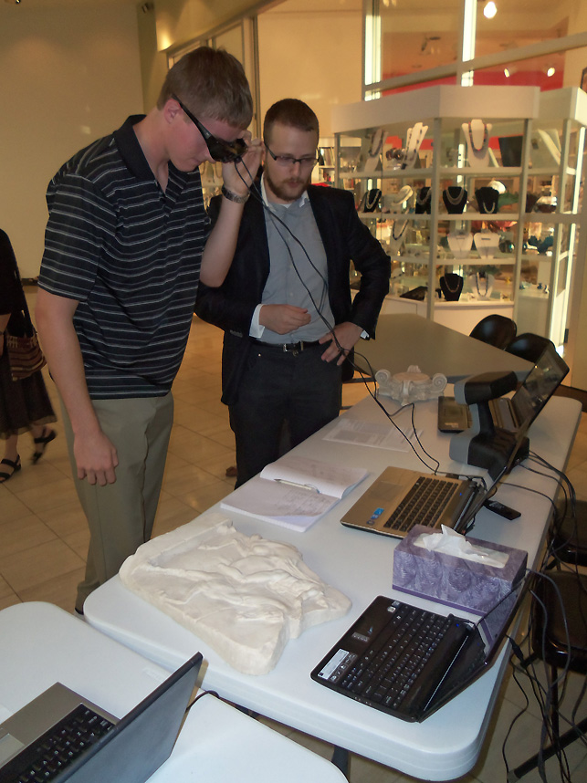
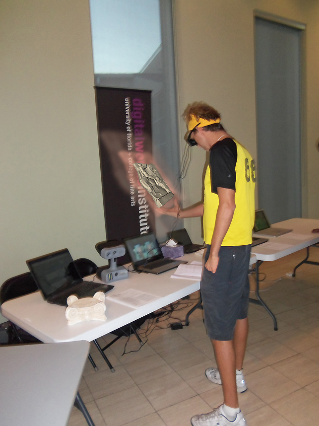
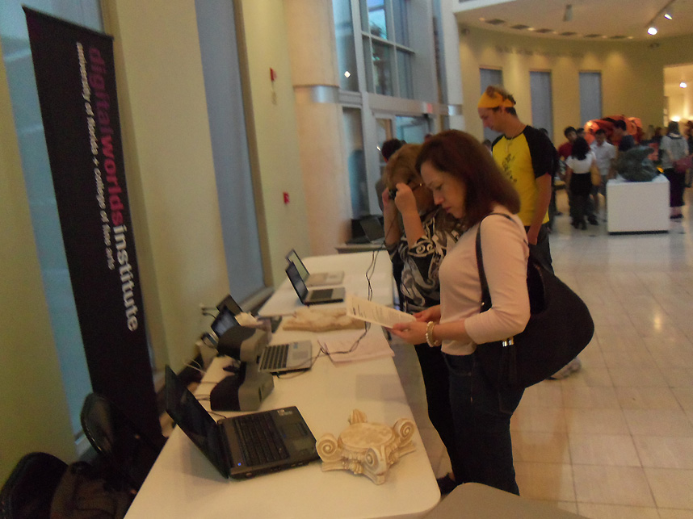

October 13, 2011
Gainesville, FL
The Digital Epigraphy and Archaeology group at the University of Florida showcased their innovative Augmented Reality Exhibit at the HARN Museum of Art to a large and enthusiastic audience.
More than 100 visitors experienced the Augmented Reality Exhibit. Using augmented reality head-mounted displays the visitors experienced the presence of virtual exhibits within the real spaces of the Harn Museum of Art. The rendering of virtual tridimensional objects within the real space was made possible using a pair of high resolution cameras in front of the head-mounted device in conjunction with stereoscopic displays.


Visitors included students and faculty from UF Computer and Information Science and Engineering, Electrical Engineering, Materials Science and Engineering, Mechanical and Aerospace Engineering, Psychology, Clinical and Translational Science Institute, College of Nursing, College of Liberal Arts and Sciences, College of Journalism and Communications, College of Law, SHANDS Arts in Medicine, Museum of Natural History, and the Digital Worlds Institute.



The DEA editorial team